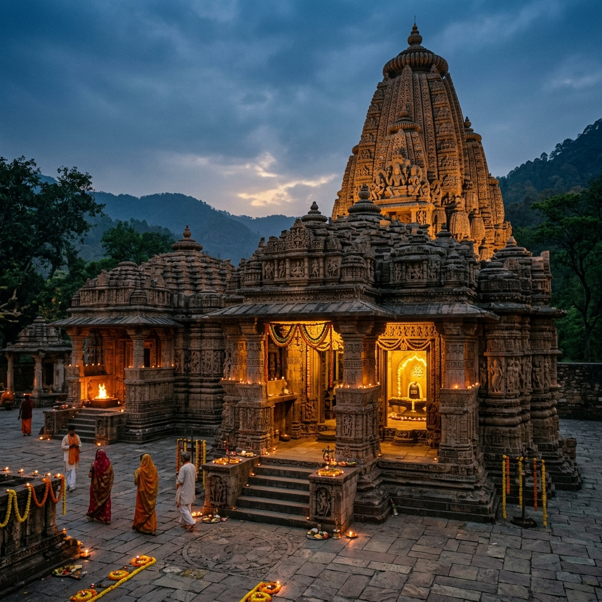

Bateshwar Temples
India
The Sacred Legacy

Bateshwar Temples is a majestic temple of monumental spiritual significance, serving as a pillar of divine resonance.
Designed with absolute devotion, this temple offers visitors an unparalleled aura of peace and divine presence. The breathtaking architecture is matched only by the deep spiritual vibration felt within its majestic halls. Thousands travel miles simply to witness the grand evening Aarti, a mesmerising ritual of faith.